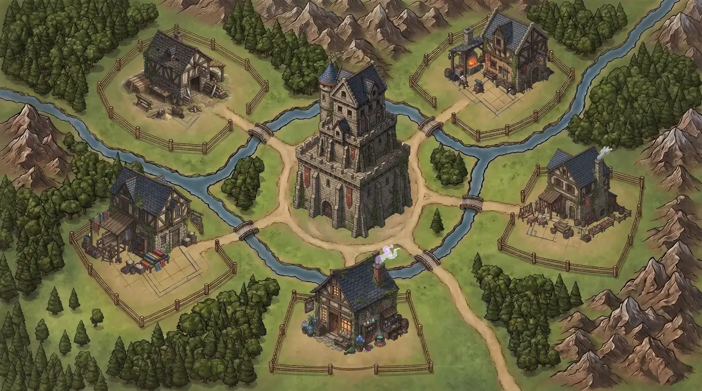
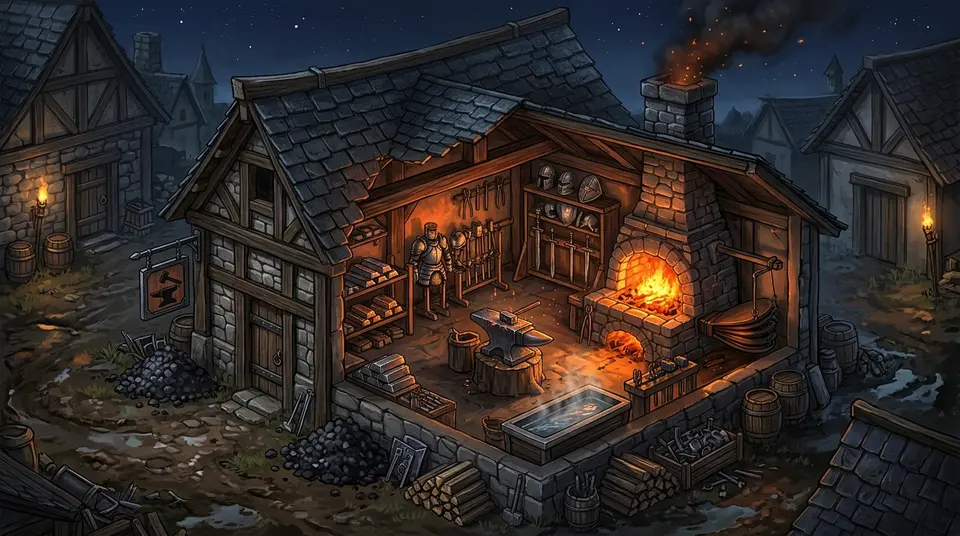
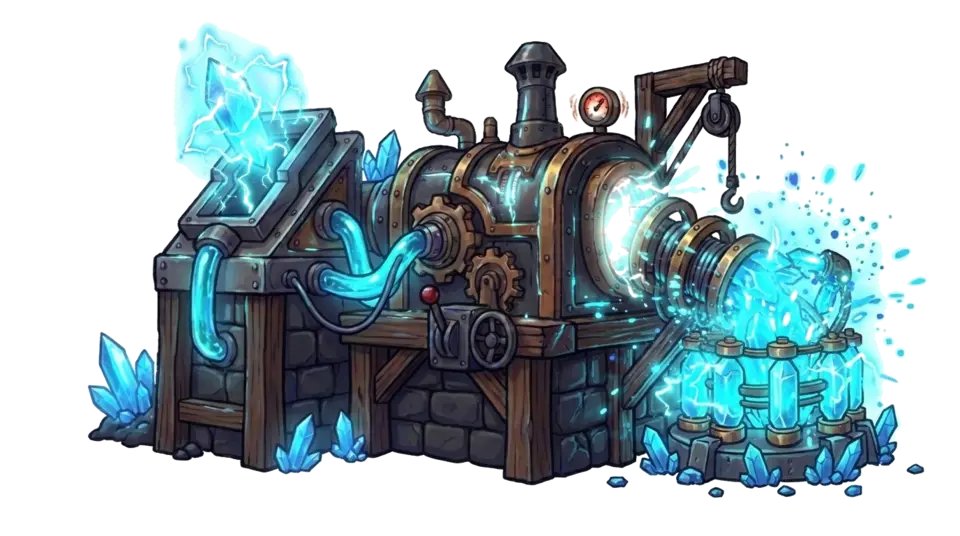

Caminhada & Corrida Real
Rastreamento por GPS e contador de passos em segundo plano, com arauto por voz e sincronização segura caso fique sem internet no meio do trajeto.
Caminhe e corra no mundo real para evoluir seu herói, explorar bairros como reinos medievais, forjar equipamentos no vilarejo e proteger as muralhas do seu território.
Aviso do Beta: O nome K.O.T (King of Territory) e a logo atual ainda são temporários. Você está recebendo acesso antecipado para testar e ajudar a moldar o jogo.
Sem precisar ficar olhando para a tela enquanto anda: inicie sua expedição, guarde o celular no bolso e deixe o Éter Cinético trabalhar por você.
Rastreamento por GPS e contador de passos em segundo plano, com arauto por voz e sincronização segura caso fique sem internet no meio do trajeto.
O mapa transforma os bairros da sua cidade em reinos reais. Explore 1 km em um território, chegue ao nível 5 e preste juramento de lealdade à sua bandeira.
Seus treinos geram prosperidade coletiva e energia para manter as muralhas de pé. Patrulhe seu território com constância e dispute o trono na Semana da Ascensão.
Explore 6 lojas com mestres de ofício, forje e aprimore armas e armaduras até +5, engaste joias raras na mochila e use poções de XP e vigor nos seus treinos.
Iluminação de dia e noite, clima real da sua cidade, muralhas que refletem a defesa do reino e um vilarejo completo para evoluir seu personagem.

Visite a Sede do Reino, Ferraria da Guarda, Marcenaria Real, Tenda do Mercador, Loja de Poções e Loja de Proteínas. Cidadãos leais aproveitam taxas comerciais reduzidas de apenas 5%.

Crie equipamentos, aprimore atributos com ferro, madeira e Joia do Caos, perfure engastes e gerencie tudo pelos Aposentos do Herói.

A cada 500 m acumulados você canaliza energia dos cristais para fortalecer o Escudo do Reino e evitar que as muralhas caiam em ruínas.
Como o jogo ainda está em fase Beta fechado, ele ainda não está na Google Play Store. A instalação pelo arquivo APK é simples e segura:
Toque no botão Baixar Beta para Android aqui na página e aguarde concluir o download (~122,4 MB).
Toque na notificação de download concluído ou abra a pasta Downloads do seu celular e selecione o arquivo kot-*.apk.
Se o Android exibir um aviso de segurança, toque em Configurações → Permitir desta fonte, volte e toque em Instalar.
Abra o K.O.T, faça login com Google ou crie sua conta e dê sua primeira caminhada! Próximas atualizações avisam direto dentro do app.
Sim. O arquivo é compilado e publicado diretamente no repositório oficial de releases do projeto no GitHub, com verificação de integridade SHA-256. O Android sempre mostra um aviso padrão para qualquer aplicativo baixado fora da loja oficial — basta confirmar a permissão para o seu navegador.
Por enquanto, este primeiro Beta está disponível apenas para celulares Android (7.0 ou superior). A versão para iOS está nos planos para uma etapa futura após os testes iniciais.
Não! Seu progresso fica salvo na sua conta no servidor. Além disso, sempre que houver uma nova versão oficial, o próprio app exibirá uma barra no topo para você baixar e instalar a atualização por cima, mantendo tudo preservado.
Não precisa. Se o sinal cair durante o treino, o aplicativo guarda sua atividade localmente no aparelho e sincroniza automaticamente com o servidor assim que a conexão voltar, sem duplicar nem perder seu trajeto.
É só responder diretamente para quem te enviou este link! Pode mandar prints, ideias ou relatar qualquer coisa estranha que notar durante as caminhadas — cada feedback ajuda muito a melhorar o jogo.